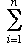

Prove the Triangle inequality:
If a, b are real numbers then | a + b | ≤ | a | + | b |.
When is this inequality strict ?
Why is it called the Triangle inequality ?
Use induction to prove that if a1, a2, ..., anare any real numbers then |ai| ≤ |ai|.
Give examples or prove the non-existence of sequences which are:
(a) convergent but not monotonic,
(b) bounded but not convergent,
(c) convergent but not bounded,
(d) monotonic but not bounded,
(e) divergent to +∞ but not monotonic,
(f) monotonic and bounded but not convergent,
(g) unbounded but not monotonic,
(h) positive and convergent, but not monotonic.
The sequence ( (2n + 1)/(n + 1) ) converges to 2. How big must we choose N to be so that the terms of the sequence are within ε of this limit if ε = 0.1, 0.01, 0.0001 ?
Do the same thing for the sequence ( (2n2+ 1)/(n2+1) ).
Give examples or prove the non-existence of sequences such that:
(a) (|an|) converges but (an) does not converge,
(b) (an) converges but (|an|) does not converge,
(c) (an) and (bn) do not converge, but (an+ bn) converges,
(d) (an) and (an+ bn) converge but (bn) does not converge.
Let a be a real number in (0, 1). Let an be the real number obtained by deleting the first n digits of the decimal expansion of a.
For example, if a = 0.1234567... then a1 = 0.234567.., a2 = 0.34567..., etc.
For which a is the sequence (an) convergent and what is its limit ?